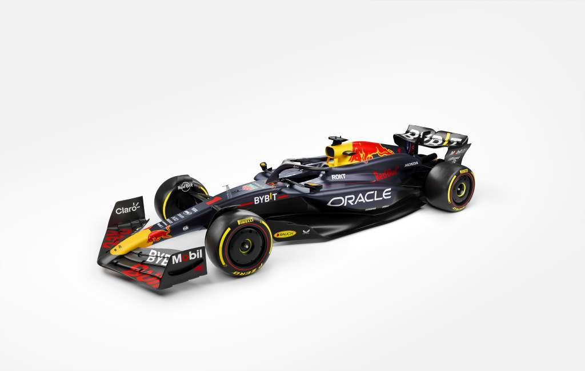
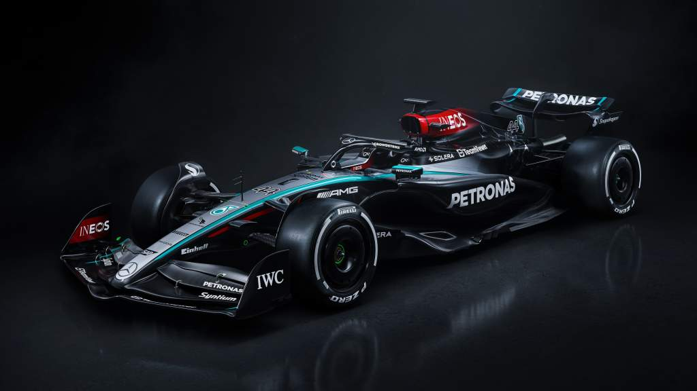
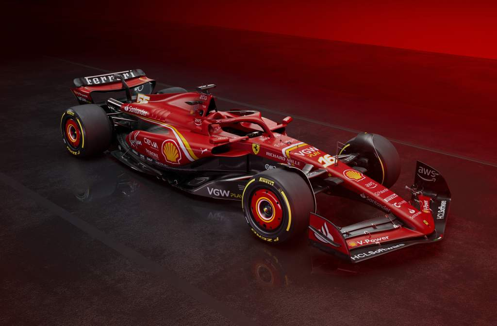

Red Bull
Red Bull to drużyna znana z odważnych taktyk i talentu w rekrutowaniu młodych kierowców. Ich bolidy są zawsze konkurencyjne, a agresywny styl jazdy ich kierowców sprawia, że są zawsze w grze o zwycięstwo.
Mercedes
Mercedes to symbol dominacji w światowej Formule 1 od początku ery hybrydowej w 2014 roku. Ich niezrównana kombinacja osiągów silnika, technologii oraz doskonałej strategii wyścigowej sprawiły, że są drużyną do pokonania dla każdego konkurenta.
Ferrari
Ferrari to legenda Formuły 1, z długą historią i niezaprzeczalnym prestiżem. Chociaż ostatnie lata były dla nich trudne, ich zasoby, doświadczenie i pasja pozwalają im nadal być ważnym graczem na torze.
McLaren
McLaren to zespół, który odnosił wielkie sukcesy w przeszłości i stara się odzyskać dawną świetność. Ich współpraca z silnikami Mercedesa sprawia, że są drużyną, na którą warto zwracać uwagę, zwłaszcza z dynamicznymi kierowcami za kierownicą.
Aston Martin
Aston Martin powrócił do Formuły 1 po długiej przerwie, przynosząc ze sobą ducha luksusu i wyrafinowania. Ich bolidy są nie tylko piękne wizualnie, ale także konkurencyjne na torze, szczególnie z doświadczonymi kierowcami.
Alpine
Dawniej znany jako Renault, zespół Alpine to mieszanka francuskiego stylu i inżynieryjnej precyzji. Ich osiągnięcia w motoryzacji drogowej przekładają się na wysokie cele w Formule 1, co czyni ich ciekawym uczestnikiem rywalizacji.
Visa RB
Niczym młodszy, utalentowany uczeń, dawniej AlphaTauri uczy się od mistrza. Yuki Tsunoda, niczym japoński samuraj, i , Daniel Ricciardo niczym australijski mistrz, tworzą duet gotowy na niespodzianki. Czy uda im się w 2024 roku wskoczyć do czołówki stawki i namieszać w rywalizacji?
Stake Sauber
Dawniej Alfa Romeo to zespół z bogatą historią i silnym związkiem z włoskim motoryzacyjnym dziedzictwem. Choć nie zawsze są w ścisłej czołówce, ich determinacja i pasja sprawiają, że są ważnym elementem peletonu Formuły 1.
Williams
illiams to legenda sportu motorowego, ale ostatnie lata były dla nich trudne. Jednak ich historia, doświadczenie i dążenie do poprawy sprawiają, że są wciąż zespołem, który można podziwiać i wspierać.
Haas
Haas to stosunkowo nowy gracz w Formule 1, ale ich podejście polegające na partnerstwie z doświadczonymi dostawcami części pozwala im rywalizować na torze. Ich zespół jest często uważany za trampolinę dla młodych talentów.